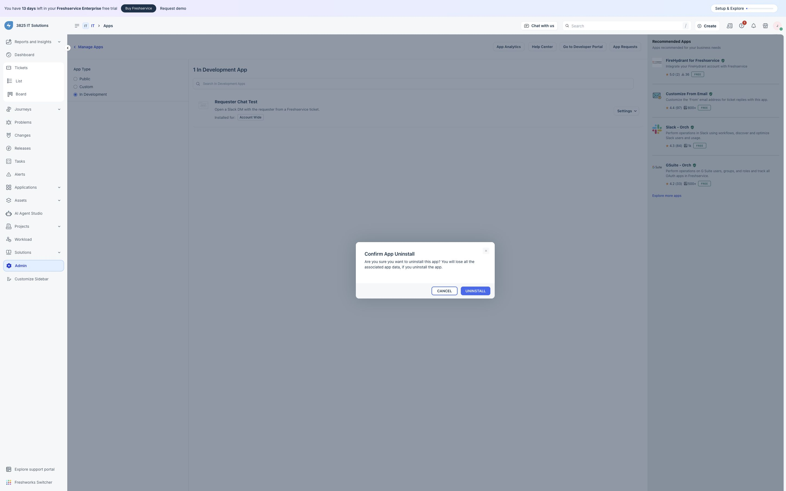
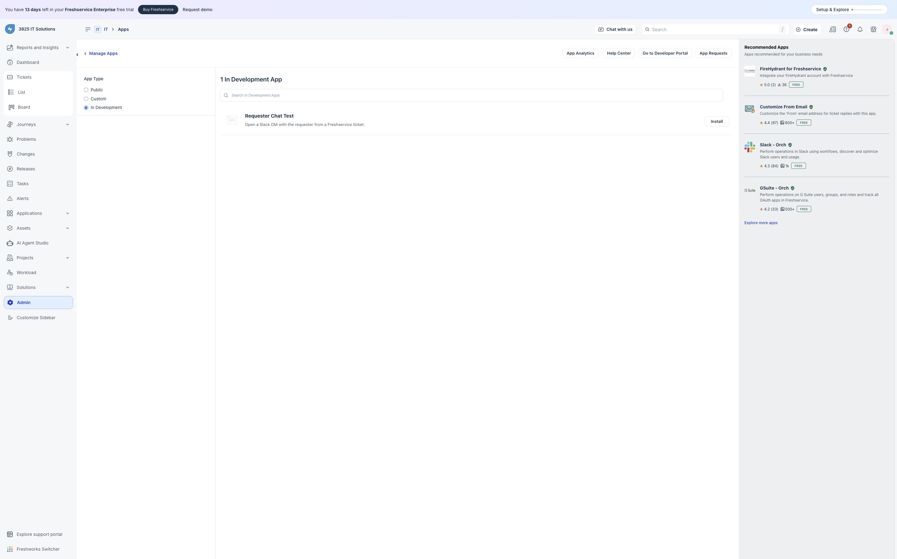
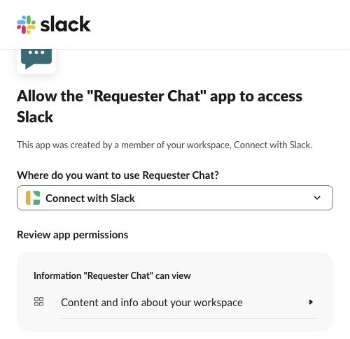
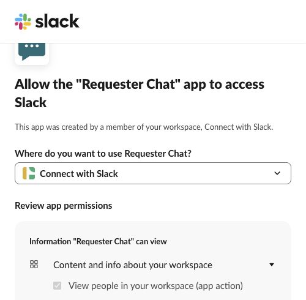
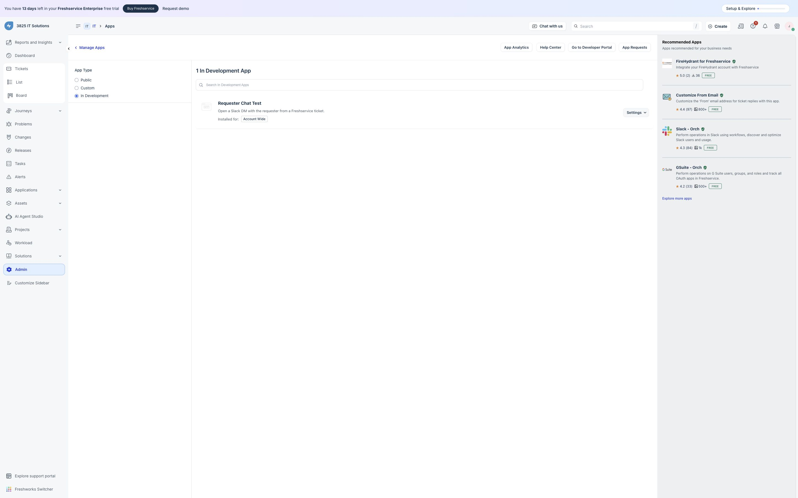
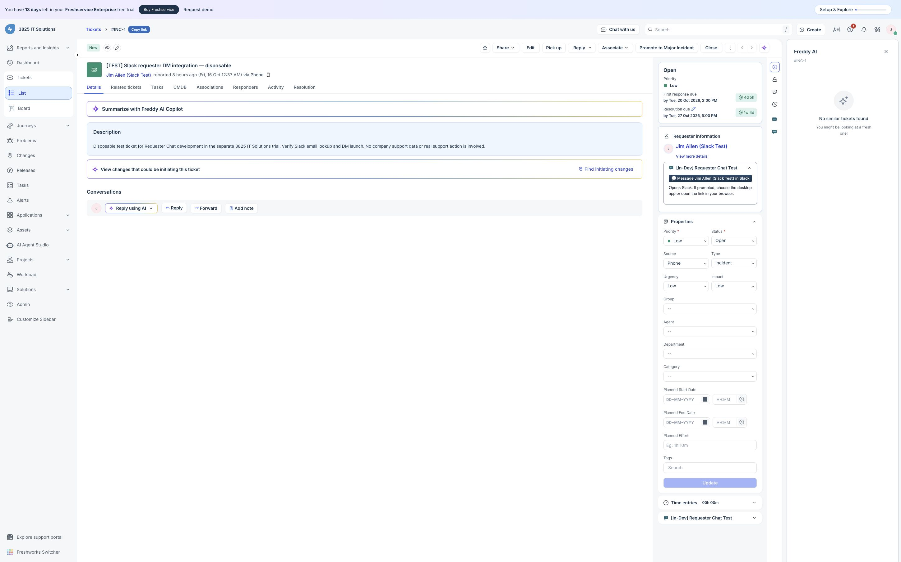
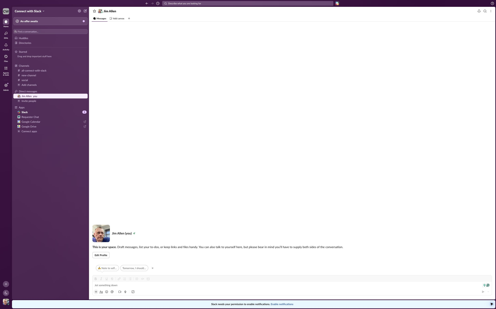

Actual browser screenshots captured October 16, 2026 in the separate 3825 IT Solutions trial and Connect with Slack development workspace. This is a documented screenshot series, not a continuous recording. Commercial approvals remain pending.
Freshservice uninstall confirmation in the isolated trial.

Freshworks displays App uninstalled and offers Install again.

Clicking Install opens the actual Slack consent screen for Connect with Slack.

Expanded scope detail captured during reauthorization immediately before this uninstall/reinstall sequence. Only member and email lookup are requested; no message permissions.

After Allow, the OAuth window closes and Freshworks confirms account-wide installation.

The hosted app resolves the synthetic ticket requester after reinstall. In-development Save and Test apps require dev=true on the ticket URL.

The actual Slack destination is the test member's self-DM. No message was sent. Distinct-person and external-workspace tests remain pending.

Reviewer Freshservice credentials will be supplied privately after activation and independent sign-in validation. Reviewers must connect their own Slack workspace through Freshworks OAuth; no publisher Slack login is shared. Create a synthetic requester with an active human Slack member's email and open its test ticket. Use the requester-panel button and confirm the intended conversation.
After testing, uninstall the Freshservice app. Separately revoke Slack authorization through Slack app management if desired; separate Slack revocation is not shown in this series. Account lifetime must cover review. This evidence does not prove an external workspace installation, distinct-person DM or Marketplace approval. Slack determines the evidence format it accepts.